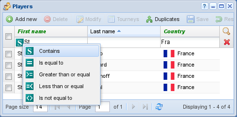

Filtering¶

The search menu¶
On the top right of the grid there are two buttons that respectively activate and deactivate record filtering. The one with the magnifying glass icon adds a row of editable fields just below the column titles where you can insert values that will be used as a filter on the particular column. The other clears all the current filters.
As shown in the figure, with the menu on the left you can select a different filtering
criteria, for example to select players born before a particular date. The default criteria is
contains, that is entering the string “mat” in lastname filter will match all
the players whose lastname contains that string, that is either “Matys”, or “Dematté”,
or “Zumat”.
It is possible to search on one or more column at the same time, for example to show only
french players you can enable the field guilabel:country and type the text FRA in its
search field, then maybe typing players initials in the field firstname.